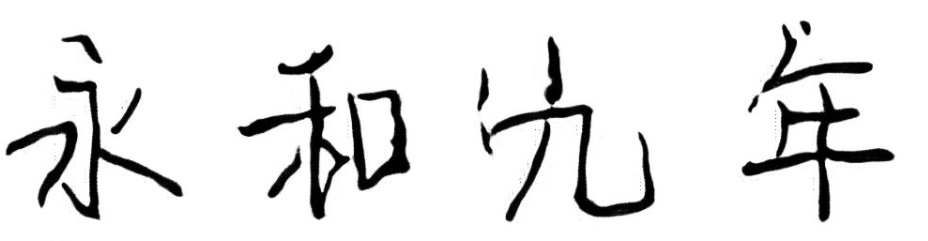
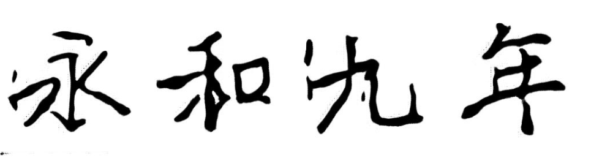
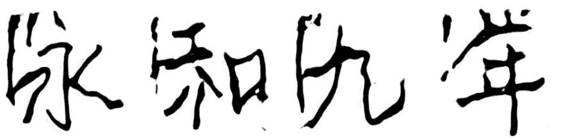
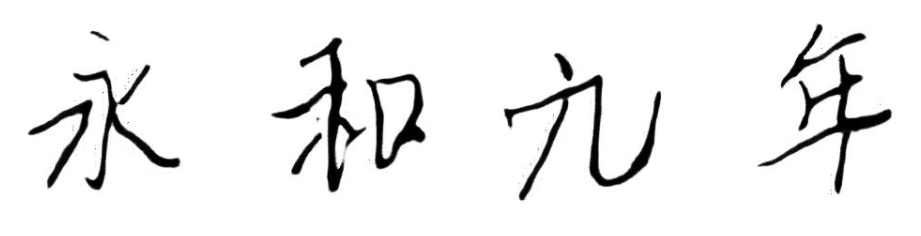
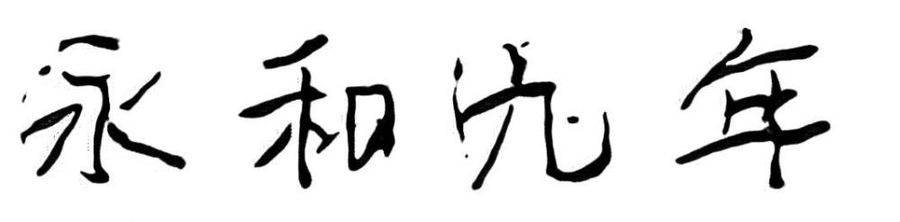

{% load static %}
<!DOCTYPE html>
<html lang="en">
  <head>
    <meta charset="utf-8">
    <link rel="shortcut icon" href="{% static 'calligraphy/assets/img/favicon.ico' %}">
    <title>书法生成</title>
    <link href="{% static 'calligraphy/assets/css/bootstrap.css' %}" rel="stylesheet">
 	<link href="{% static 'calligraphy/assets/css/style.css' %}" rel="stylesheet">
    <script src="{% static 'calligraphy/assets/js/jquery.min.js' %}"></script>

    <!-- HTML5 shim and Respond.js IE8 support of HTML5 elements and media queries -->
    <!--[if lt IE 9]>
      <script src="{% static 'calligraphy/assets/js/html5shiv.js' %}"></script>
      <script src="{% static 'calligraphy/assets/js/respond.min.js' %}"></script>
    <![endif]-->
  </head>

<body data-spy="scroll" data-offset="0" data-target="#navbar-main">

  	<div id="navbar-main">
		<div class="navbar navbar-default navbar-fixed-top">
			<div class="container">
				<div class="navbar-header">
					<a class="navbar-brand" href="/calligraphy"><h1 style="font-family:'华文行楷';">书法生成</h1></a>
					<button type="button" class="navbar-toggle dropdown-toggle" id="open-menu" data-toggle="dropdown" data-target="#main-navigation">
						<i class="el-icon-lines"></i>
					</button>
				</div>
				<div class="navbar-collapse collapse" id="main-navigation">
					<ul class="nav navbar-nav">
						<li><a href="/calligraphy" class="smoothScroll" style="font-size:20px;">首页</a></li>
<!--						<li><a href="#about" class="smoothScroll">关于</a></li>-->
						<li><a href="/calligraphy/history" class="smoothScroll" style="font-size:20px;">生成历史</a></li>
					</ul>
				</div>
			</div>
		</div>
    </div>

    <div id="" name="home" class="" style="height: 50px; min-height: 200px;">
		<header class="clearfix " >
  		</header>
    </div>

	<!--  CONTENT WRAPPER -->
	<div id="content-wrapper" style="width: 60%">

		<section id="about" class="container page-section" style="width: 90%">
			<div class="row white">
				<h1 class="fade-down centered section-title" style="font-family:'华文行楷';font-size: 40px">书法生成</h1>
				<hr>
			</div>

			<div class="row white">

				<div class="btn-group">
					<button id = "buttonid" type="button" class="btn btn-default dropdown-toggle"
							data-toggle="dropdown" style="font-family:'华文行楷';font-size:20px;">选择字体<span class="caret"></span>
					</button>
					<ul class="dropdown-menu" role="menu">
						<li><a onclick="changeid(1)"></a></li>
						<li><a onclick="changeid(2)"></a></li>
						<li><a onclick="changeid(3)"></a></li>
						<li><a onclick="changeid(4)"></a></li>
						<!--<li><a onclick="changeid(5)">5</a></li>-->
						<li><a onclick="changeid(6)"></a></li>
						<li><a onclick="changeid(7)"></a></li>
					</ul>

				</div>
				<div class="checkbox">
					<label>
						<input id="box" type="checkbox">对联（字数不超过10）
					</label>
				</div>
				<!--<div class="row white">-->
				<!--当前字体：-->
				<!--</div>-->

				<form class="form-01__form">

					<div class="form__item" style="padding:0;width: 100%">
						<textarea rows="5" embedding_id="3" name="news_content" value="请输入书法内容" id= "news_content"  style="font-family:'华文行楷';font-size:20px;padding:0;line-height:30px;width: 100%;height:250px;" placeholder="永和九年，岁在癸丑，暮春之初，会于会稽山阴之兰亭，修禊事也。" ></textarea>
					</div>
					<div class="form__button">
						<input id="btn_post" type="submit" class="btn btn-primary  btn-lg btn-radius" style="font-size:18px;margin-right:20px;" value="点击生成" onclick="check_txt()" />
					</div>

				</form>
			</div>
		</section>
	</div>

	<script type="text/javascript" src="{% static 'calligraphy/assets/js/bootstrap.js' %}"></script>
    <script type="text/javascript" src="{% static 'calligraphy/assets/js/plugins.js' %}"></script>

	<script type="text/javascript" src="{% static 'calligraphy/assets/js/init.js' %}"></script>

	<script type="text/javascript">
		jQuery(document).ready(function($){
			'use strict';
			  jQuery('body').backstretch([
				  // "{% static 'calligraphy/assets/img/bg/bg1.jpg' %}"
				 //"{% static 'calligraphy/assets/img/bg/bg2.jpg' %}"
				 "{% static 'calligraphy/assets/img/bg/bg3.jpg' %}"
			  ], {duration: 5000, fade: 500});
			});

	</script>
	<script type="text/javascript">
	function check_txt(){

		var content = $.trim($("#news_content").val());
		var embedding_id = $("#news_content").attr('embedding_id');
		var couplet = $('#box').is(':checked');

		if(content == ""){
			$('#news_content').val($("#news_content").attr('placeholder'));
			content = $.trim($("#news_content").val());

		}

		// alert(couplet);
		couplet+="";
		// content+="";
		if(couplet=="true"){
			// alert("输入太ss长"+content.length);
			if(content.length>10){
				alert("输入太长,请重新输入");
				window.location.reload()
				return;
			}
		}
		// alert(content);
		// 按钮不可用
		$("#btn_post").attr("disabled",true);

		// 使用ajax将请求发送到app上
		$.ajax({
			url:"/calligraphy/check_txt/",      //url
			type: "POST",                //提交表单的类型，相当于method="post"
			dataType: "json",            //dataType, 这个是请求后，返回的数据将以json格式显示
			data:{
				"content": content,
				"embedding_id":embedding_id,
				"couplet":couplet
			},                                //Data这个地方，必须要获取数据，代表将获取到的数据发送到后端，后端再进行处理
			success:function(data){
				// alert("work")
				// 数据库处理完之后返回一个id，需要自己在新页面查找该id
				console.log(data);            //调试使用
				//alert(data)

				var list = eval(data);
				//var rawtitle = list[0];
				//var newtitle = list[1];
				var txt_id = list[list.length-1];


				// alert(txt_id);
				newurl = '/calligraphy/'+txt_id;
				// alert(newurl)
				// 拿到新的id，去新的界面渲染。
				// 这个写法其实是不科学的，如果提交完表单需要跳转的话，直接用from标签不就好了？
				// 这里就像是个ajax模仿的from，但是好处是如果这个请求有很长时间才能相应，我可以用js做一些让用户等待，或者排队的画面
				window.location.href = newurl;
			},


		});//注意标点符号
	}

	function changeid(x) {
		// alert(x)
		$('#news_content').attr("embedding_id",x);
		var imgsrc = '../../static/calligraphy/imgs/'+x+'.png';
		$("#buttonid").html("<span class='caret'>");
		$('#demoimg').attr("src","../../static/calligraphy/imgs/"+x+".png")
		// alert($('#box').is(':checked'))
	}
	</script>

  </body>
</html>
